https://www.youtube.com/watch?v=Y57MApUlDhk · 546 shots · 19 scenes
Central theme: Claire drops off her baby and reveals her breakup, while Lauren discovers shocking news on her phone. Key contributors: group10 (Claire, guest), group8 (Josh, host), group3 (Kelsey, friend), group4 (Lauren, friend). Events: (1) Claire brings her baby over and reveals that she and Rob recently broke up; (2) Kelsey sympathizes with Claire and suggests inviting her out to brunch to support her; (3) Lauren scrolls through her phone and gasps when she sees an alarming news article; (4) In a hurry to speak with Liza, Lauren grabs her belongings and rushes out the door.
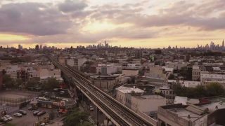
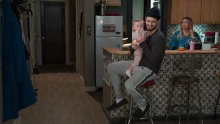
Central theme: Lauren rushes to warn Liza about Quinn and Charles's public relationship before an upcoming meeting. Key contributors: group4 (Lauren, friend), group1 (Liza, friend), group5 (Maggie, roommate). Events: (1) Lauren arrives at Liza's apartment and shows her the Page Six article linking Charles to Quinn Tyler; (2) Lauren warns Liza that Quinn is attending an Empirical marketing meeting later that morning; (3) Maggie enters with Gatsby costumes delivered for an anniversary party that Liza is scheduled to attend; (4) Lauren offers to find Liza an attractive escort to accompany her to the party, but Liza declines.
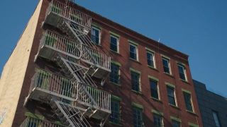
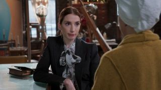
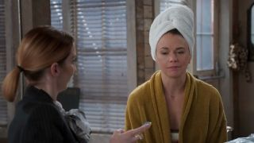
Central theme: Quinn and Charles pitch Quinn's new book at Empirical, raising editorial and personal concerns for Liza. Key contributors: group7 (Quinn Tyler, author), group6 (Charles, publisher), group1 (Liza, editor), group3 (Kelsey, colleague), group4 (Lauren, colleague). Events: (1) Quinn leads a meeting detailing the marketing for her upcoming book and openly flirts with Charles; (2) Charles deflects Quinn's comments about an intimate anecdote and suggests continuing their notes in private; (3) After Quinn and Charles step out, Liza points out multiple factual inconsistencies in Quinn's manuscript; (4) Kelsey urges Liza to step back and let Charles handle any issues related to Quinn's book.
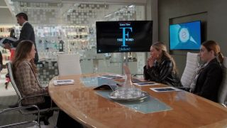
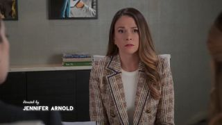
Central theme: Liza confronts Charles about inaccuracies in Quinn's book, and Charles apologizes for the awkward meeting. Key contributors: group1 (Liza, editor), group6 (Charles, publisher). Events: (1) Liza enters Charles's office to point out dubious claims in Quinn's manuscript, including a story about Elizabeth Warren; (2) Charles apologizes to Liza for how the relationship news came out during the marketing meeting; (3) Liza insists on keeping their focus purely professional and offers to fact-check the remaining red flags in the text; (4) Charles agrees to let her proceed, and Liza hurriedly departs the office for her evening plans.
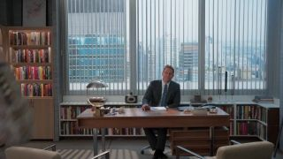
Central theme: Liza puts on her Gatsby costume at the office and flaunts her look in front of Charles on her way out. Key contributors: group3 (Kelsey, friend), group4 (Lauren, friend), group1 (Liza, friend), group6 (Charles, colleague). Events: (1) Kelsey and Lauren discuss Claire's post-breakup social media presence as they walk through the office; (2) Liza emerges dressed in a sparkling 1920s gold flapper gown and feather boa for Michelle's anniversary party; (3) Lauren and Kelsey encourage Liza to embrace her single status and flaunt her stunning outfit; (4) Liza confidently struts past Charles in the lobby, catching him completely off guard as he chokes on his water.
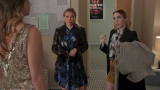
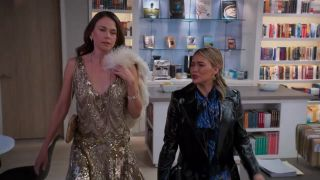
Central theme: At Michelle's anniversary party, Liza explains her absence of a date and clarifies that she turned down a proposal. Key contributors: group1 (Liza, guest), group9 (Michelle, host), group13 (host's husband). Events: (1) Liza arrives alone at the roaring twenties anniversary party and greets Michelle and her husband; (2) Michelle assumes Charles was unwilling to commit, offering unsolicited sympathy about Liza's situation; (3) Liza corrects her by revealing that Charles had actually proposed, but she turned it down because she does not want to remarry; (4) Michelle momentarily laughs off the remark before turning her attention to welcome other arriving party guests.
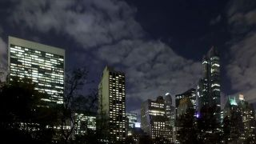
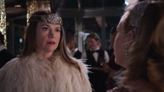
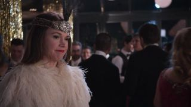
Central theme: Maggie and Josh attend a college art auction where Maggie's artwork is spotlighted and romantic interest stirs. Key contributors: an off-screen dean/speaker, group5 (Maggie, artist), group8 (Josh, guest). Events: (1) The dean of the Art College of New York addresses attendees at a silent auction to benefit a scholarship fund; (2) The dean specifically highlights Maggie Amato's painting and jokes that she intends to claim it for herself; (3) An attractive guest approaches Maggie to compliment her appearance and express interest in her art; (4) Josh teases Maggie about being the center of attention and asks about the intriguing woman talking to her.
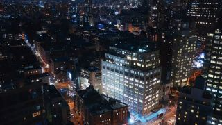
Central theme: Liza dances at the 1920s-themed party and unexpectedly runs into Vince. Key contributors: group1 (Liza, attendee), group2 (Vince, attendee), group18 (dance instructor). Events: (1) Liza dances energetically across the dance floor during a Charleston group dance; (2) A dance instructor and other party attendees observe and follow along with the music; (3) Vince approaches Liza without a costume and calls out her name; (4) Liza and Vince happily reconnect, realizing it has been years since their kids were in carpool together; (5) Vince reveals that he is divorced, and the two decide to hit the dance floor together.
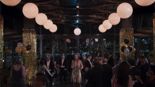
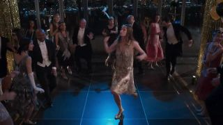
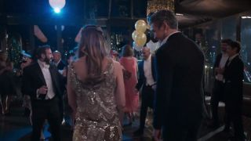
Central theme: Maggie is offered a teaching position at an art program during an art gallery event. Key contributors: group5 (Maggie, artist), group12 (program head), group8 (Josh, friend). Events: (1) A faculty member approaches Maggie at the gallery event and reveals she had an ulterior motive for inviting her; (2) She offers Maggie an open teaching position in their visual arts program; (3) Maggie is surprised and flattered, while her companion points out she already mentors for free; (4) The faculty member invites Maggie to come to her office next week to discuss the job.
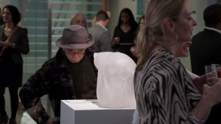
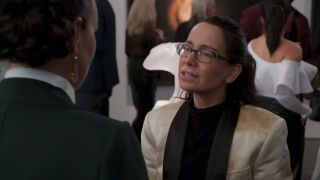
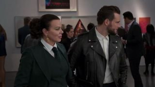
Central theme: After parting ways with her friend, Maggie meets a captivating stranger on the street. Key contributors: group5 (Maggie, artist), group8 (Josh, friend), group11 (Camilla, stranger). Events: (1) Maggie and her friend walk down the sidewalk laughing about her potential professor title; (2) Maggie's friend kisses her cheek goodbye to catch an early train to Philadelphia; (3) Maggie notices a glamorous woman leaning against a graffiti wall who asks her for a lighter; (4) The two share a cigarette, talk about how boring the party was, and the woman invites Maggie to walk with her.
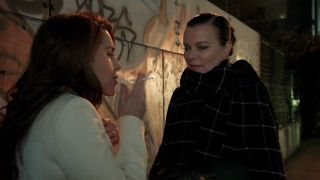
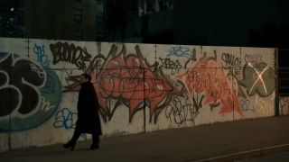
Central theme: Liza and Vince flirt while dancing at the themed event. Key contributors: group1 (Liza, attendee), group2 (Vince, attendee). Events: (1) Liza and Vince dance together while reminiscing about old neighborhood gossip; (2) Liza jokes that her book club friends called Vince 'hot dad'; (3) Vince teases her about old neighborhood memories and calls her 'hot mom'; (4) The dance instructor interrupts briefly to encourage the crowd to keep dancing.
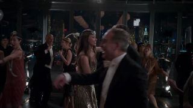
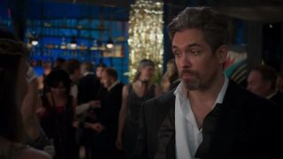
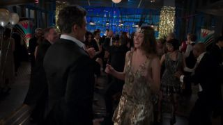
Central theme: Maggie and Liza take a morning walk through Brooklyn and discuss their recent romantic and professional developments. Key contributors: group5 (Maggie, friend), group1 (Liza, friend). Events: (1) Maggie and Liza walk with coffee cups, recounting their respective previous nights; (2) Maggie explains her romantic encounter with the stranger and shows a pink pill that was left for her; (3) Liza refuses the recreational drug, mentioning she has to fact-check Quinn's book; (4) The two laugh about the vagueness of Liza's fact-checking job as they continue walking.
Central theme: Liza meets Quinn's former assistant to verify a story from Quinn's upcoming book. Key contributors: group1 (Liza, editor/fact-checker), group15 (Aiden, former assistant). Events: (1) Liza meets Aiden at a coffee shop and reviews notes in her manuscript; (2) Aiden vents about the degrading tasks he had to perform as Quinn's second assistant; (3) Aiden offers to help Liza discredit Quinn, but Liza insists she only wants the truth; (4) Liza asks about the WeWork divestment claim, and Aiden confirms Quinn actually made that smart decision; (5) Liza removes the sticky note, confirms the claim is true, and thanks Aiden before leaving.
Central theme: Friends gather for brunch to support Claire through her recent breakup. Key contributors: group10 (Claire, friend), group4 (Lauren, friend), group3 (Kelsey, friend). Events: (1) The women toast with mimosas at an outdoor table for a 'breakup brunch'; (2) Claire insists she is completely fine and that her breakup with Rob was amicable and mature; (3) Her friends joke about how they have never handled breakups maturely; (4) Claire asks how another relationship ended, prompting them to grab another bottle and tell the story.
Central theme: Vince calls Liza to ask her to dinner, and she agrees to go as dinner buddies. Key contributors: group1 (Liza, editor), group2 (Vince, suitor). Events: (1) Liza finishes an uncomfortable phone call fact-checking Quinn's book and immediately receives a call from Vince; (2) Vince calls her 'hot mom' and invites her to dinner in Soho on Monday; (3) Liza hesitates, explaining she isn't looking for a relationship right now; (4) Vince reassures her that he is happy just being dinner buddies, and Liza smiles and accepts; (5) After hanging up, Liza looks out the café window with a pleased expression.
Central theme: Maggie accepts the teaching job only to discover that the department head's wife is the woman from the night before. Key contributors: group5 (Maggie, artist / new hire), group12 (department head), group11 (Camilla, wife). Events: (1) The department head outlines the teaching hours, salary, and benefits to Maggie in her office; (2) Maggie is thrilled, particularly about dental insurance, and eagerly agrees to sign; (3) The department head's wife, Camilla, walks in to be introduced; (4) Maggie realizes in shock that Camilla is the woman she hooked up with outside the gallery the night before.
Central theme: Liza discusses weekend romance with her colleague before Quinn stops by to praise her editorial notes and mention dinner plans with Charles. Key contributors: group1 (Liza, editor), group7 (Quinn Tyler, author and client), group3 (Kelsey, colleague). Events: (1) Liza chats with her colleague in the office kitchen about weekend social media posts and relationship drama; (2) A woman joins them to warmly thank Liza for her insightful editorial notes on her manuscript; (3) She declines Liza's offer to forward the notes, explaining that she will personally show them to Charles over dinner; (4) After taking a brief phone call, she exits the kitchen; (5) Liza and her colleague discuss how it is better to have her as an ally than an enemy in the workplace.
Central theme: Liza and Vince discuss divorce and expectations over dinner while Charles and Quinn bond, leading Liza to confess she remains in love with her ex. Key contributors: group1 (Liza, diner), group2 (Vince, diner), group7 (Quinn Tyler, diner), group6 (Charles, diner). Events: (1) Liza and Vince catch up over wine and pasta, discussing their past divorces and the pressures of long marriages; (2) Across town, Charles and Quinn enjoy a cozy fireside dinner together, discussing ambition, past isolation, and their mutual desire for stability; (3) Vince misinterprets Liza's outlook and assumes she wants a casual, strings-free arrangement; (4) Liza clarifies that she genuinely desires a partnership and explains her complicated feelings surrounding her ex's proposal; (5) Overcome with emotion, Liza tearfully admits that she is still deeply in love with her ex; (6) Vince excuses himself to the restroom, while Charles and Quinn conclude their evening with a passionate kiss.
Central theme: Liza learns from a political consultant that Quinn needed a respectable partner for her campaign, casting suspicion on her relationship with Charles. Key contributors: group1 (Liza, editor), group14 (Ayana Williams, political consultant), group7 (Quinn Tyler, author and politician), group6 (Charles, colleague). Events: (1) Liza takes a phone call from political consultant Ayana Williams regarding Quinn Tyler's campaign and upcoming book; (2) Ayana reveals that voters perceived Quinn as cold and elitist because she was an unmarried woman; (3) Ayana admits she advised Quinn to recruit a partner with kind eyes and a strong jawline to boost her political polling numbers; (4) While listening to the call, Liza gazes through the glass office partition and sees Charles happily flirting with Quinn; (5) Realizing Charles perfectly matches the profile of Quinn's strategic political partner, Liza watches them with growing realization.